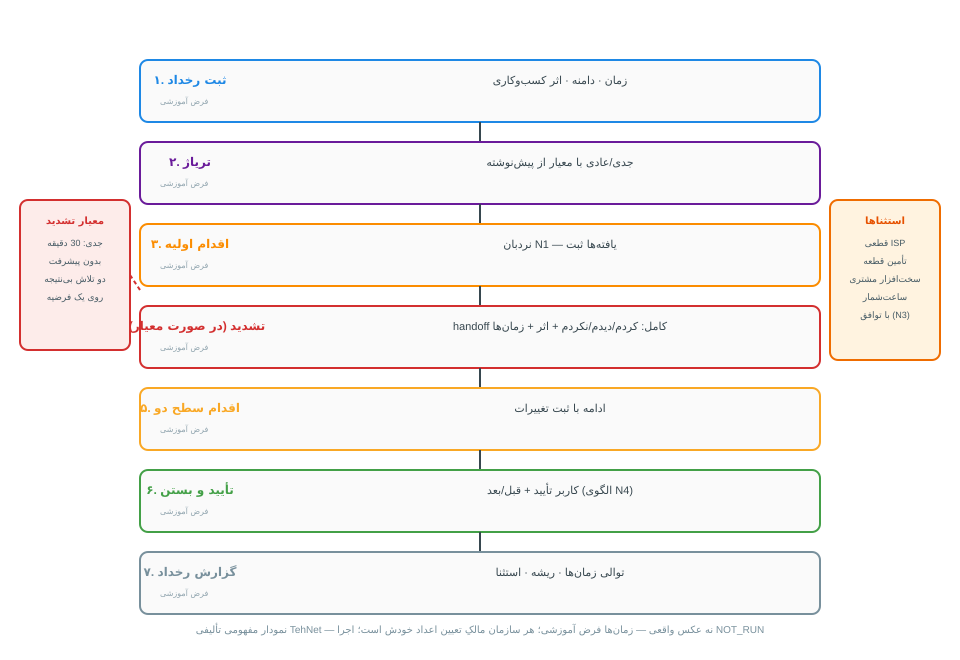

وضعیت درس: DRAFT / NOT_DEPLOYED — در انتظار مرور.
آموزش تصویری از سری پشتیبانی؛ مخاطب: مدیر کسبوکار + کارشناس شبکه.
سناریوی کاملاً فرضی و آموزشی با دادهٔ ساختگی؛ هیچ شبکهٔ واقعی دستکاری نشده و هیچ اجرای واقعی NOT_RUN است.
زمانهای جدولها «فرض آموزشی»اند نه SLA واقعی (SLA → درس N3).
نمودار مفهومی و تألیفی است (نه عکس واقعی).
مسیر رخداد یعنی یک توالی ثبتشدهٔ از پیشموافق: ثبت (زمان/دامنه/اثر کسبوکاری) → تریاژ (جدی/عادی با معیار از پیشنوشته) → اقدام (الگوی نردبان N1) → در صورت نیاز تشدید (با معیارِ از پیشموافق و handoff کامل) → تأیید و بستن (با ثبت قبل/بعد — الگوی N4). بدون مسیرِ از پیشموافق، هر رخداد به تماسهای پراکنده، «فردا درست میشه» و اختلاف بعدی تبدیل میشود. استثناها (قطعی ISP، تأمین قطعه، سختافزار مشتری) از قبل تعریف میشوند تا ساعتشمار منصفانه باشد (الگوی N3).
| بند | مقدار فرضی آموزشی |
|---|---|
| سازمان | دفتر ۲۵ نفره (مبنای N3) |
| رخداد فرضی | اتاق سرور از ساعت 09:10 در دسترس نیست؛ ۱۲ نفر کارشان ایستاده |
| اثر کسبوکاری (ثبتشونده) | تعداد کاربر متأثر + سرویسهای قطع + مدت |
| اعداد زمانسنج جدولها | «فرض آموزشی» — هر سازمان خودش را تعیین میکند (UNKNOWN عمومی) |
| اجرای واقعی | NOT_RUN — همهٔ ثبتها نمونهٔ ساختگی |
| مرحله | چه کسی | چه ثبت میشود | زمان فرض |
|---|---|---|---|
| ۱ ثبت رخداد | هر کاربر/کارشناس | زمان، دامنه، اثر (چند نفر/چه سرویسی)، گزارشگر | لحظهٔ گزارش |
| ۲ تریاژ | کارشناس پذیرنده | جدی/عادی (معیار از پیشنوشته: «کل دفتر یا سرور = جدی») | ≤ ۱۵ دقیقه فرض |
| ۳ اقدام اولیه | کارشناس | نردبان N1 شروع شد؛ یافتهٔ اول | ≤ ۳۰ دقیقه فرض |
| ۴ تشدید (در صورت معیار) | کارشناس → سطح دو/مدیر | handoff کامل (پایین را ببینید) | معیار: ۳۰ دقیقه بدون پیشرفت در جدی (فرض) |
| ۵ اقدام سطح دو | سطح دو | ادامهٔ ثبت + تغییرات با قبل/بعد | — |
| ۶ تأیید و بستن | کاربر/مسئول تأیید (الگوی N4) | تأیید کاربر + قبل/بعد + دستورها | — |
| ۷ گزارش رخداد | کارشناس | توالی زمانها، ریشه، اقدام، استثنا (در صورت بود) | پس از بستن |

شرح متنی نمودار (جایگزین تصویر برای دسترسپذیری): هفت جعبهٔ پشتسرهم از بالا به پایین: ۱ ثبت رخداد (زمان/دامنه/اثر)، ۲ تریاژ با معیار از پیشنوشته، ۳ اقدام اولیه با نردبان N1، ۴ تشدید در صورت معیار با handoff کامل، ۵ اقدام سطح دو، ۶ تأیید کاربر و بستن با ثبت قبل/بعد، ۷ گزارش نهایی ریشه و استثنا. جعبهٔ قرمز کناری معیار تشدید (جدی: ۳۰ دقیقه بدون پیشرفت؛ دو تلاش بینتیجه روی یک فرضیه) و جعبهٔ نارنجی سمت دیگر سه استثنا با رفتار ساعتشمار را نشان میدهد. زمانها «فرض آموزشی»اند و هر سازمان مالک تعیین اعداد خودش است. برچسب «تألیفی/مفهومی».
معیار تشدید باید قبل از رخداد نوشته شود؛ پیشنهاد الگو (فرض آموزشی):
handoff کامل هنگام تشدید (چیزی که تشدید را از «پاسدادن مشکل» جدا میکند):
چه کردم: گامهای نردبان N1 که اجرا شد + نتیجهٔ هر گام
چه دیدم: مشاهدات (link-ok، gateway درست، لاگ مرتبط، شمارندهها)
چه نکردهام: فرضیههای تستنشده + علت (دسترسی/ابزار)
اثر: تعداد کاربر/سرویس/مدت تا الان
زمانها: ثبت، پاسخ، شروع، آخرین اقدام| استثنا | رفتار ساعتشمار (فرض توافق) | ثبت لازم |
|---|---|---|
| قطعی ISP | تشخیص سمت ISP → ساعتشمار متوقف تا برگشت سرویس؛ اطلاع به کارفرما | زمان تشخیص + شمارهٔ پیگیری ISP |
| تأمین قطعه | توقف ساعتشمار از سفارش تا رسید قطعه (با توافق کتبی) | سفارش/مدت اعلامی تأمینکننده |
| سختافزار مشتری | خارج از دامنهٔ پیمانکار؛ راهنمایی داده میشود | ثبت راهنمایی |
همسانی با N3: این استثناها باید در قرارداد هم آمده باشند — درس N3 همان بندها را پرچم میکند.
ثبت اثر (تعداد کاربر متأثر × مدت × سرویس) سه کار میکند: اولویتگذاری تریاژ، سنجش واقعی SLA، و گزارش دورهای برای جلوگیری از تکرار. قالب یکخطی:
09:10 | ۱۲ کاربر | اتاق سرور از دسترس | گزارش: مدیر داخلی| خطا | چرا گران است | درست |
|---|---|---|
| رخداد فقط تلفنی ثبت میشود | زمانها و اثر بعداً قابلاثبات نیست | ثبت مکتوب لحظهٔ گزارش |
| تریاژ بدون معیار از پیشنوشته | هر بار جدی/عادی سلیقهای میشود | معیار از قبل نوشته و امضا |
| تشدید بدون handoff | سطح دو از اول شروع میکند = دوبارهکاری | handoff کامل چهاربندی بالا |
| بستن بدون تأیید کاربر | «رفع شد» قابلچالش است | تأیید کاربر + قبل/بعد (N4) |
| حذف استثنا برای قبولشدن | منصفانه نیست و اعتماد میشکند | استثناها از قبل (N3) و ثبتشده |
| علت «نامشخص» بستن میشود | رویداد تکراری میماند | حتی «علت نامشخص» با شرح کامل ثبت و پیگیری دورهای (N2) |